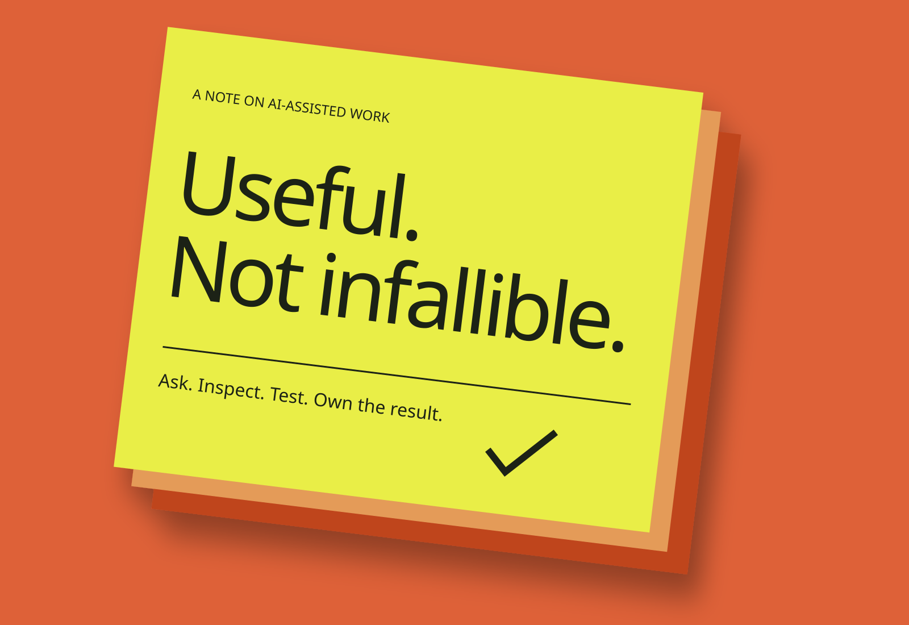

Tools,
with judgment.
AI-assisted processes and web apps interest me. The responsibility for understanding the result does not disappear.
Personal approach / Illustrative edition / No benchmark or delivery claims

A helpful tool
is still a tool.
AI can be a way to explore a problem, shape an initial idea or ask for a different explanation. I’m interested in AI-assisted work processes and web applications for those possibilities—not because a generated answer automatically becomes a reliable one.
The interesting question is where assistance fits. What is the task? What context does the tool have? What needs an independent check? Those questions keep the person doing the work in the picture.
Speed does not
replace a check.
A plausible answer can still be wrong. In software work, the result needs to be read, understood and exercised. I want assistance to support that process, not to become an excuse for skipping it.
For an illustrative example, imagine asking a tool to outline a small web-app feature. Its suggestions could help identify options. The developer still has to decide what belongs in scope, inspect the implementation and test the actual behavior. This is a thought experiment, not an account of a delivered client project.
My interest is in a useful relationship with the tool: ask clearly, inspect carefully, test what matters and own the result. That principle connects this newer curiosity to the rest of my software practice.
Return to the collection